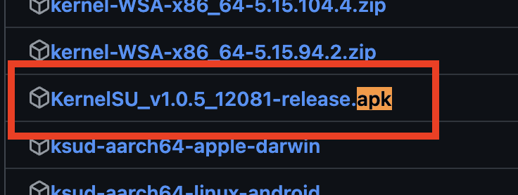

KernelSU
文章目录
前言
上一篇文章讲了解锁 bootloader，那么解锁后的第一件事就是 root，今天就来讲下使用 KernelSU 作为 root 方案。
以小米手机为例。
为什么使用 KernelSU 作为 root 方案
KernelSU工作在内核模式，并直接在内核空间中为用户空间应用程序授予 root 权限。
不容易被检测到，可以省去不少麻烦。
备份 boot.img
boot.img 的作用是用于救砖，当你刷机出了问题，就可以使用它来恢复。
这一步不是必须的，但是非常重要，关键时刻可以救命。
提取 boot.img 可以有两种方法，分别是从卡刷包和线刷包中提取。
卡刷包
卡刷包可以在升级系统的时候获取，当升级包下载完成后，立刻断网。到 Download/download_rom 就可以找到。
找到后解压得到 payload.bin 留着备用。
要从 payload.bin 中提取 boot.img 还需要 pyload-dumper-go 这个工具
Mac 可以使用 brew 进行安装
|
|
其它平台到ssut/payload-dumper-go: an android OTA payload dumper written in Go 选择合适的下载
安装好之后通过如下指令获取 boot.img
|
|
线刷包
线刷包就比较简单了，到XiaomiROM.com - 小米 ROM | MIUI、澎湃OS（HyperOS）线刷包, 卡刷包的最新及历史版本下载下载手机对应的包（名字带有 fastboot），需要和手机版本一致。
下载好解压就能看到 boot.img 了。
刷入 KernelSU
到Releases · tiann/KernelSU下载管理器，就是以 .apk 结尾的，下载好后安装到手机。

安装后打开，如果显示未安装表示可以使用 KernelSU，如果显示的是不支持，表示需要自己编译内核。
这里只考虑未安装的情况。
再次到Releases · tiann/KernelSU 下载对应的内核，只需要保证前两个小数点一致就可以。
骁龙请下载 boot.img.gz ，联发科请下载 boot-gz.img.gz
比如： 5.15.123 就只要 5.15.xxx 就行。
下载好后，解压得到 xxx-boot.img ，然后进入到 bootloader
|
|
等待重启好，使用下载的内核引导系统
|
|
等待重启，如果可以正常开机，打开 KernelSU 管理器显示在工作中，那么没问题。
如果不能正常开机，直接重启即可，因为没有刷入内核。
如果没问题，就可以刷入内核了。
|
|